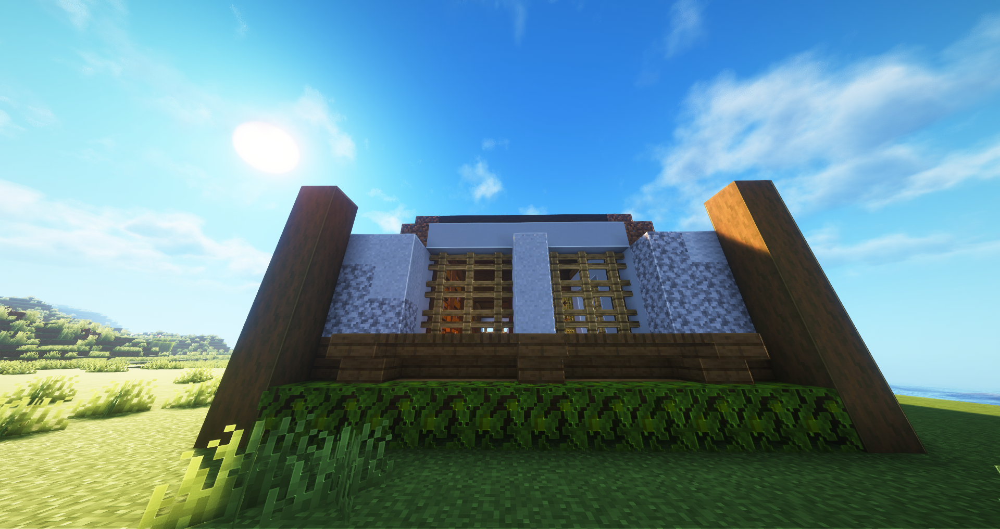
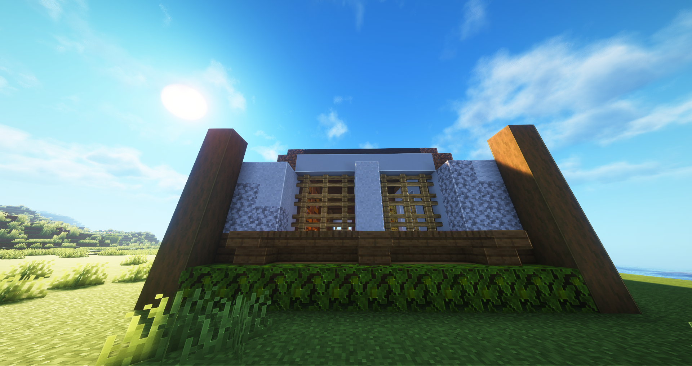

Monday
07:30 p.m. - i hate collecting resources for building in survival games.
Tuesday
XX:XX - i accidentally hyper-fixated on something i started on this day that i forgot to take screenshots, so you can simply move on.
Or don't. That works, too.....
"I was born into world fighting. Struggling for my life. I've not once heard my mother's
voice before; she
died the moment I came out of her womb. My father? Don't got one." The older adventurer spoke
with pure spite. For
whom, I wouldn't know, but I held my breath for he continued, "From then on, there was not one
moment where I can
simply stop and breathe and live my life as any parent would wish their child to do so. Then
again, parents are gone.
Forever and ever."
Y'know what? I think this spark of curiousity should ought rewarded.
You are now fully obligated to sit here and read an excerpt from a high-fantasy story I've been
planning to write.
It's my gateway back to creative writing and push me away from writer's block.
So, go on. Read.
Or don't. After all, you have a choice.
He paused in his recollection, stopping to inspect his blade before sheathing his sword.
I feel myself tensed as I watched the man become sullen. "Or so I thought... until I met
them. The love of
my life."
I couldn't help but asked, near choking on my words, "What... what happened?"
The Diamond-ranked adventurer blinked a drop of tears away before turning to stare into the
campfire. "We needed income... and
becoming ratcatchers or going into the mines wasn't going pay us enough. So I volunteered to
become an adventurer. It
was supposed to be simple... but then the riches and recognition got to me; it inflated my ego.
My hubris, my folly.
If you know who I am, then I don't need to regale you the legends and tales. Just know... none
of it was worth the pain
of losing my love. They... moved on. I don't blame them. What would you do when your lover gave
you empty promises to
return and share their rewards, only to know they're enjoying it all without you? It has been...
ten years? Over that
time, last I heard and remembered, they gotten with another man, a fancy manor, and a set of
children. And here I am
enjoying life without my reason to live."
The adventurer looked back up to me as my face reflected off his lost, haunted eyes and gave
me—and what I know now—his
fakest smile of content. "Remember this, rookie: Nothing hurts more in the world than a life
without meaning. Fifteen years ago, I became the
youngest and only adventurer to achieve the highest ranking since the Guild Master and the
strongest man since the Age of Dawn ended for our
home. But at the end of it all? I'm simply a walking corpse seeking his grave. Not for atonement
or some other form of punishment for
myself. No, I'm going on these high-class quests because I just don't care anymore. And I'll do
it the way I was born into the world.
Fighting. Struggling for my life."
Wednesday
03:30 p.m. - what i hyper-fixated on that i forgot to take screenshots yesterday.

04:50 p.m. - rewatching this highlight video of EXU Calamity for the nth time.
07:35 p.m. - using buttons in Max 9 Patcher for pixel art was a good use of my time this week.

09:45 p.m. - committed to the filler; no take backs.
11:00 p.m. - oh yeah, it's all coming together.
Thursday
09:50 p.m. - so far, so good.
10:00 p.m - first part to the interior.
10:45 p.m. - i just remembered why i hate collecting concrete of all things.
10:55 p.m. - does he know about the D-O-R-E? ... the what?
Friday
02:20 p.m. - i like the new building meta.
02:30 p.m. - it's like a reward.
 
